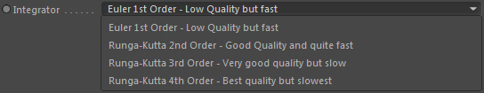
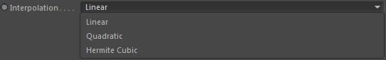

Parameters
Parameters
Grid Channel
The grid channel you want to advect by the linked velocity field.
Note: The channel must have its advection memory option activated.
Velocity Channel
The velocity channel (fluid dynamics) node to use for advecting the grid channel.
Note:
If no grid channel is linked but the velocity channel only, it will advect itself!
This is used for the Gaseous dynamics node when simulating smoke & fire.
This is used for the Gaseous dynamics node when simulating smoke & fire.
Precision
The advection (transport) precision.
1st Order
Low Precision but fast. Good for laminar flow.
2nd Order
High Precision but a little slower. Good for turbulent flow.
Mix
Allows blending between 1st and 2nd Order precision. See '1st <-> 2nd Order'.
1st <-> 2nd Order
Mixing between 1st order and 2nd order advection.
If your fire flow is too turbulent you can try to reduce this value to quickly get a more laminar flow.
Integrator

Defines the advection integration (accuracy of the result). The quality of advection is directly linked to this setting.
Higher order integrators are more accurate but slower.
Interpolation

Interpolation of velocity grid values is also a fundamental criteria for the quality of the resulting motions.
Energy, vortices and details are better preserved.
Linear
Low quality but super fast (appropriate though in 2nd Order Precision)
Quadratic
High quality
Hermite Cubic
High and sharp quality but slow